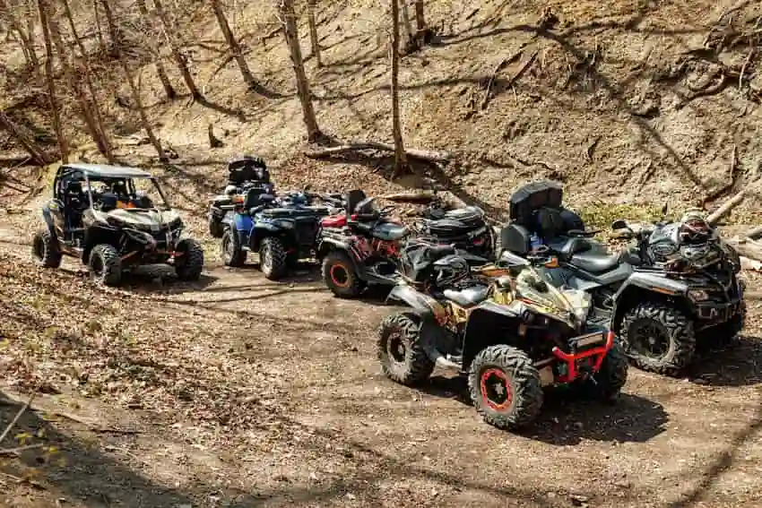

Southern Utah Offroad Community

Welcome to our ATV Community
The site is focused on the community of side-by-side / ATV / Offroad vehicles here in St. George, Utah. Any news for the community, ideas of locations to ride, and a couple options for buying or upgrading rigs can be found here.
Current Weather
High:
Low:
Humidity:
Sunrise:
Sunset:
- What time of day is best to go riding during the summer?
Many of our riders prefer to go either early in the morning, or more towards the late afternoon evenings, between 5pm - 7pm. Always remember to plan ahead and make sure you don't go too far into the trail by the time it gets dark.
- Is there a place to meet new people while riding?
The community is very welcoming. Feel free to spark up a conversation with any rider you see on the trails, or anywhere in the city. There are some Facebook pages you could join as well if interested. Just look for Southern Utah Offroading.